Steering Committee
| 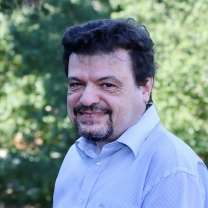 | Bojan Cukic (Chair), University of North Carolina at Charlotte, USA | |
| 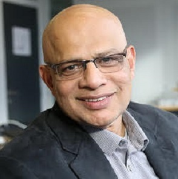 | Ram Chillarege (Vice Chair), Industry Focus, Chillarege Inc, USA | |
| 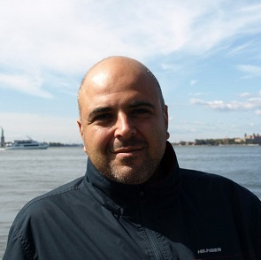 | Domenico Cotroneo, Federico II University of Naples, Italy | |
| 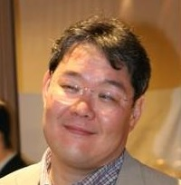 | Tadashi Dohi, Hiroshima University, Japan | |
| Valerio Formicola, California Polytechnic State University in Pomona, USA | ||
| 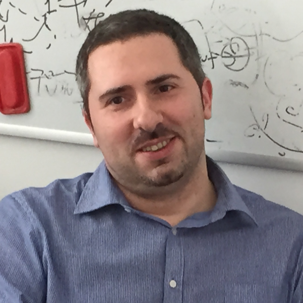 | Leonardo Mariani, University of Milano - Bicocca, Italy | |
| 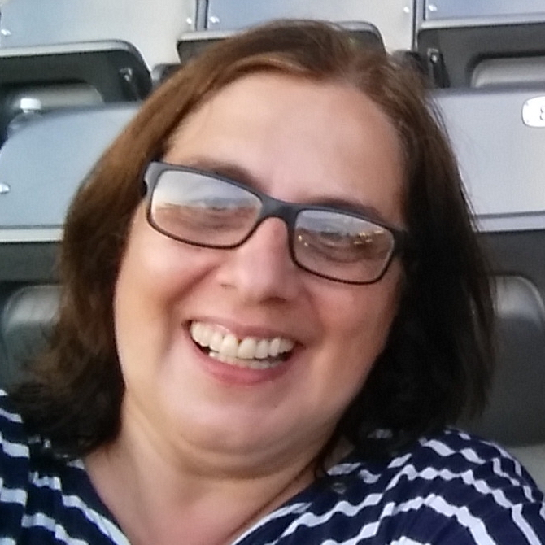 | Katerina Goseva-Popstojanova, West Virginia University, USA | |
| 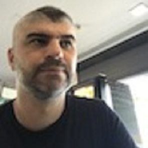 | Marco Vieira, University of Coimbra, Portugal | |
| 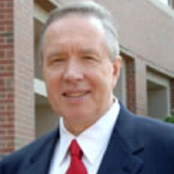 | Mladen Vouk, North Carolina State University, USA | |
| Jianwen Xiang, Wuhan University of Technology, China | ||
| Advisory Committee | ||
| 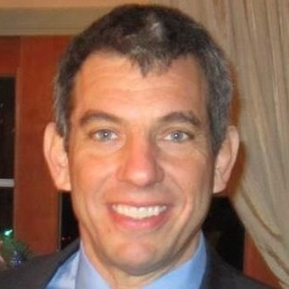 | Phil Laplante, Pennsylvania State University, USA | |
| 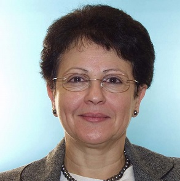 | Karama Kanoun, LAAS, CNRS, France | |
| 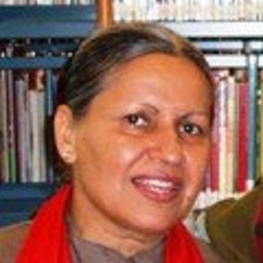 | Veena Mendiratta, Bell Labs, Nokia, USA | |
| 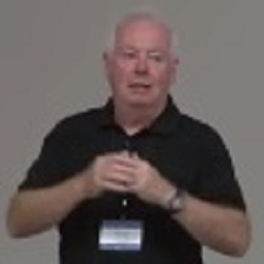 | Brendan Murphy, Microsoft Research, UK | |
Steering Committee - The function of the Steering Committee (SC) is to provide direction to the ISSRE Conference and help the current leadership team be most successful in executing the conference. The SC is responsbile to identify the next conferences and their leadership teams. Members of the Steering Committee have been associated with the ISSRE conference for many years and several of them have played the key leadership roles in the conference. Thus, they bring a body of knowledge valuable to guide the team responsible to execute the next conference.
The SC is responsible for the long term evolution of the conference, its technical directions, area focus, and the creation of mechanism the best help the engineering community. ISSRE was one of the first conferences that championed the notion of a Fast-Abstract (~20 years ago) which has now become a publication model for early results and is widely used by many engineering conferences. This past year (2013) it was the first conferences in its class to provide live WEBEX broadcast of it research and industry tracks.
The SC composition has a almost even mix of industry and academy. Each member is an internationally recognized leader in their technical area of expertise, and typically serves in a leadership capacity at their University or Corporation. They are intimately aware of the trends and directions in academia, industry and government in the area of Software Engineering.
Advisory Committee - The function of the Advisory Committee is to identify new leaders who can serve on the Steering Committee. At ISSRE 2013 in Pasadena, we had a detailed presentation and discussion on how the Steering Committee was chosen and evolved. We also discussed its future direction. A lot of thought has gone into the formation and division of responsibilities, so that we serve both the academic and industry communities in what they value most. This has borne great results as witnessed over the past decade creating both a strong academic and strong senior industry community. This is unusual for any IEEE Software Engineering conference. This was no accident, for it was planned and executed with a singular focus. We also maintained sufficient stability in our steering committee so that long term plans could be developed and excecuted. As we look ahead we are in active dicussions on how to best evolve what we have to achieve the next level of success.
Some of their responsibilities are:
- Identify candidates to serve on the ISSRE Steering committee and fill spots vacated as SC members terms expire.
- Hear suggestions for improving the conference.
- Conduct special survey or studies at the request of the Steering Committee.
- Along with the Steering Committee, explore and receive recommendations for new conference venues for ISSRE, e.g., added topics to be focused on or addressed.